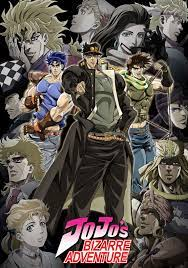
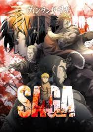
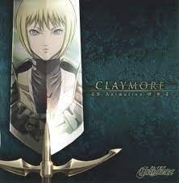

Adventure
Vagabond

In 16th-century Japan, Shinmen Takezou is a wild, rough young man, in both his appearance and his actions. His aggressive nature has won him the collective reproach and fear of his village, leading him and his best friend, Matahachi Honiden, to run away in search of something grander than provincial life. The pair enlist in the Toyotomi army, yearning for glory—but when the Toyotomi suffer a crushing defeat at the hands of the Tokugawa Clan at the Battle of Sekigahara, the friends barely make it out alive.
Vagabond is the fictitious retelling of the life of one of Japan's most renowned swordsmen, the "Sword Saint" Musashi Miyamoto—his rise from a swordsman with no desire other than to become "Invincible Under the Heavens" to an enlightened warrior who slowly learns of the importance of close friends, self-reflection, and life itself..
Rating-9.2
Chapters - 50
Bizzare Adventure

The year is 1868; English nobleman George Joestar and his son Jonathan become indebted to Dario Brando after being rescued from a carriage incident. What the Joestars don't realize, however, is that Dario had no intention of helping them; he believed they were dead and was trying to ransack their belongings. After Dario's death 12 years later, George—hoping to repay his debt—adopts his son, Dio.
While he publicly fawns over his new father, Dio secretly plans to steal the Joestar fortune. His first step is to create a divide between George and Jonathan. By constantly outdoing his foster brother, Dio firmly makes his place in the Joestar family. But when Dio pushes Jonathan too far, Jonathan defeats him in a brawl.
Years later, the two appear to be close friends to the outside world. But trouble brews again when George falls ill, as Jonathan suspects that Dio is somehow behind the incident—and it appears he has more tricks up his sleeve.
Rating-7.9
Chapters - 10
Solo Leveling

Ten years ago, "the Gate" appeared and connected the real world with the realm of magic and monsters. To combat these vile beasts, ordinary people received superhuman powers and became known as "Hunters." Twenty-year-old Sung Jin-Woo is one such Hunter, but he is known as the "World's Weakest," owing to his pathetic power compared to even a measly E-Rank. Still, he hunts monsters tirelessly in low-rank Gates to pay for his mother's medical bills.
However, this miserable lifestyle changes when Jin-Woo—believing himself to be the only one left to die in a mission gone terribly wrong—awakens in a hospital three days later to find a mysterious screen floating in front of him. This "Quest Log" demands that Jin-Woo completes an unrealistic and intense training program, or face an appropriate penalty. Initially reluctant to comply because of the quest's rigor, Jin-Woo soon finds that it may just transform him into one of the world's most fearsome Hunters.
Rating- 8.7
Chapters - 270
Yona of the Dawn

The kingdom of Kouka is blessed with a beautiful princess whose childlike innocence charms all who come across her. Named Yona, she has grown up sheltered in the royal palace, shielded from any danger that may befall her. However, all good things must come to an end.Yona's perfect world comes crashing down when a heinous act of treason threatens to erase all that she holds dear, including her birthright as the princess of Kouka. Left with no one to trust but her childhood friend and loyal bodyguard Son Hak, she is forced to flee the palace. Faced with the perils of surviving in the wild with a target on her back, Yona realizes that her kingdom is no longer the safe haven it once was.Free from the shackles of naivety, Yona vows to do everything in her power to become strong enough to crush her enemies. With Hak by her side, she must piece together the remains of an ancient legend that might be the key to reclaiming her kingdom from those who conspired to steal it from her.
Rating - 8
Episodes- 47
Vinland Saga

Young Thorfinn grew up listening to the stories of old sailors that had traveled the ocean and reached the place of legend, Vinland. It's said to be warm and fertile, a place where there would be no need for fighting—not at all like the frozen village in Iceland where he was born, and certainly not like his current life as a mercenary. War is his home now. Though his father once told him, "You have no enemies, nobody does. There is nobody who it's okay to hurt," as he grew, Thorfinn knew that nothing was further from the truth.The war between England and the Danes grows worse with each passing year. Death has become commonplace, and the viking mercenaries are loving every moment of it. Allying with either side will cause a massive swing in the balance of power, and the vikings are happy to make names for themselves and take any spoils they earn along the way. Among the chaos, Thorfinn must take his revenge and kill Askeladd, the man who murdered his father. The only paradise for the vikings, it seems, is the era of war and death that rages on.
Rating - 8.7
Chapters - 54
The legend of Northern Blade

When the world was plunged into darkness martial artists gathered to form the ‘Northern Heavenly Sect’. With the help of the Northern Heavenly Sect people began to enjoy peace again. However, as time passed the martial artists began to conspire against the ‘Northern Heavenly Sect’, and eventually caused the death of the Sect Leader, Jin Kwan-Ho, destroying the sect with it.
Rating - 9.4
Chapters - 125
Nano Machine

Nanotechnology meets martial arts at the Mashin Academy. Yeo-un's mother may not be one of the High Priest's six official wives, but his father's blood still qualifies him for a chance at the position of Minor Priest. Will a mysterious nanomachine injection from a future descendent help Yeo-un in this fierce competition against his powerful half-siblings?
Rating - 8.4
Chapters - 346
Made in Abbys

The Abyss, a hole of unprecedented depth—one young girl and a robot brave its dangers to find the truth.
The town of Orth is a special one, as it is built around the edges of the massive Abyss, a wonder which has never been fully explored. Those who venture too far down never return, but those brave enough to traverse its territories are known as "Cave Raiders" and are heralded as legends. Within this town lives a young girl called Riko, the child of one of the most famous Cave Raiders of all time who disappeared on an expedition many years ago.
One day, Riko's life changes when she meets a strange robot called Reg, who seems to appear from within the Abyss. Believing this to be a sign from her mother stuck at the bottom of the Abyss, Riko descends into its depths with Reg, ready to confront all the dangers within it.
Rating - 8.8
Episodes - 63
Your Letter

Lee Sori, a polite and righteous girl, attends a middle school plagued with bullying. Enraged by the tragic effects it has had on her friend Kim Julie, she decides to take a stand against the bullying. Unfortunately, this only leads the bullies to switch their target to Sori.
Believing a new environment would rid her of the hopeless situation, Sori returns to the city she used to live in and transfers schools. However, the traumatizing experiences that constantly haunt Sori's memory cause her to alienate herself from everyone else.
Just as the grim reality of Sori's circumstances begin to set in, she discovers a mysterious letter taped under her desk. While the contents of the letter intrigue her, they only lead her to another letter. Now following a seemingly endless trail of messages, Sori is on a scavenger hunt to find the true purpose of these letters and the anonymous person behind it all.
Rating - 8.1
Chapters - 11
Claymore

It is the Middle Ages, and the remnants of mankind are plagued by paranoia and death. Spoken in fearful whispers, the word "Yoma" cuts a clear image into the minds of all: monstrous beings with an insatiable hunger for human flesh. But fear of their gruesome appetite is dwarfed by that of their ability to shapeshift and steal the memories of their last meal. Forever vulnerable to attack, humans live in unease, even among family.
There are few means to kill a Yoma. The Organization, informally known as "Claymore," is humanity's only line of defense, dispatching half-human, half-Yoma female warriors to purify villages of Yoma. A lonely and dangerous existence, death for these warriors comes with each new assignment. What time is found between trying battles and long, arduous travels is spent in ever-intensifying struggle to resist their Yoma blood and maintain their humanity. Villagers, knowing of this, pay for their security reluctantly and have only loathsome regard for their protectors.
Claymore follows the stoic and low-ranking member Clare in her daunting trek as she searches for personal vengeance. Along the way, she encounters many unexpected things about the world, from the camaraderie and hope held fast by her sisters-in-arms to the sinister truth behind the Claymore Organization.
Rating - 8.3
Chapters - 159